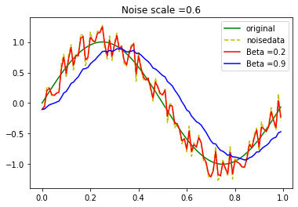
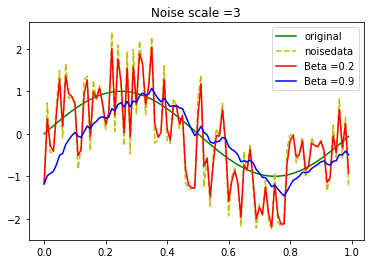

$$\bar{o}_{t+1}=\beta \bar{o}t+(1-\beta)o{t+1}$$
$o_t$：観測値
$\beta$：ハイパーパラメータ
EMAは，平滑化しすぎると元データの特性をつぶしてしまい，平滑化が足りなけ ればノイズが除去しきれない.$\beta$を適切に設計する必要がある．
import math
import matplotlib.pyplot as plt
import random
from google.colab import files
random.seed(10)
# 指数移動平均フィルタ
def EMA(data, beta):
tmp = []
for i in range(len(data)):
if i == 0 :
tmp.append(data[0])
else:
tmp.append(beta*tmp[i-1]+(1-beta)*data[i])
return tmp
def sinplot(low, high, noisescale, plotswitch):
# サンプル周期
LENGE = 100
# 真値とノイズデータ作成
time = []
original = []
noisedata = []
#rand = random.random() - 0.5
for i in range(LENGE):
time.append(i / LENGE)
rand = random.random() - 0.5
original.append(math.sin(2*math.pi*i/LENGE))
noisedata.append(math.sin(2*math.pi*i/LENGE) + rand*noisescale)
# フィルタデータ
#low = 0.6
#high = 0.95
ema05 = EMA(noisedata, low)
ema095 = EMA(noisedata, high)
# plo
# プロット
lowlabel = "Beta ="+str(low)
highlabel = "Beta ="+str(high)
title = "Noise scale ="+str(noisescale)
test = plt.figure()
plt.plot(time, original, label="original", color="g")
plt.plot(time, noisedata, label="noisedata", color="y", linestyle = "--")
plt.plot(time, ema05, label=lowlabel, color="r")
plt.plot(time, ema095, label=highlabel, color="b")
plt.title(title)
plt.legend()
test.show()
if plotswitch == True:
test.savefig('test.pdf')
files.download('test.pdf')
print("Beta="+str(low)+"のRMSE")
print(RMSE(ema05,original))
print("Beta="+str(high)+"のRMSE")
print(RMSE(ema095,original))
def RMSE(data1, data2):
sum = 0
for i in range(len(data1)):
sum += (data1[i]-data2[i])*(data1[i]-data2[i])
RMSE=math.sqrt(sum/len(data1))
return RMSE
sin波に，ノイズを与えEMAでフィルタリングを行う．
Noise Scale が小さい時は，時間遅れの少ない $\beta = 0.2$のフィルタの方 が高い性能となっているが，Noise Scale が大きい場 合は，ノイズを消しきれないため$\beta = 0.9$の方が高 い性能となっている.
ノイズが小さい場合
sinplot(0.2, 0.9, 0.6, True)
Beta=0.2のRMSE
0.1444533302318699
Beta=0.9のRMSE
0.31711365317853896

ノイズが大きい場合
sinplot(0.2, 0.9, 3, True)
Beta=0.2のRMSE
0.694611162653989
Beta=0.9のRMSE
0.41248681215726846
